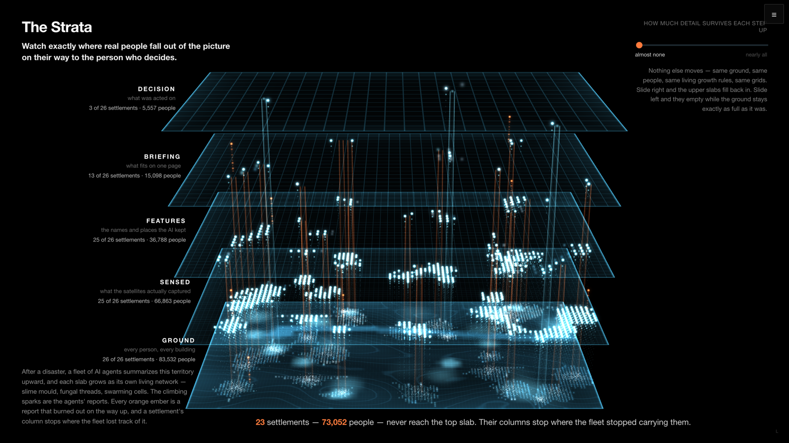
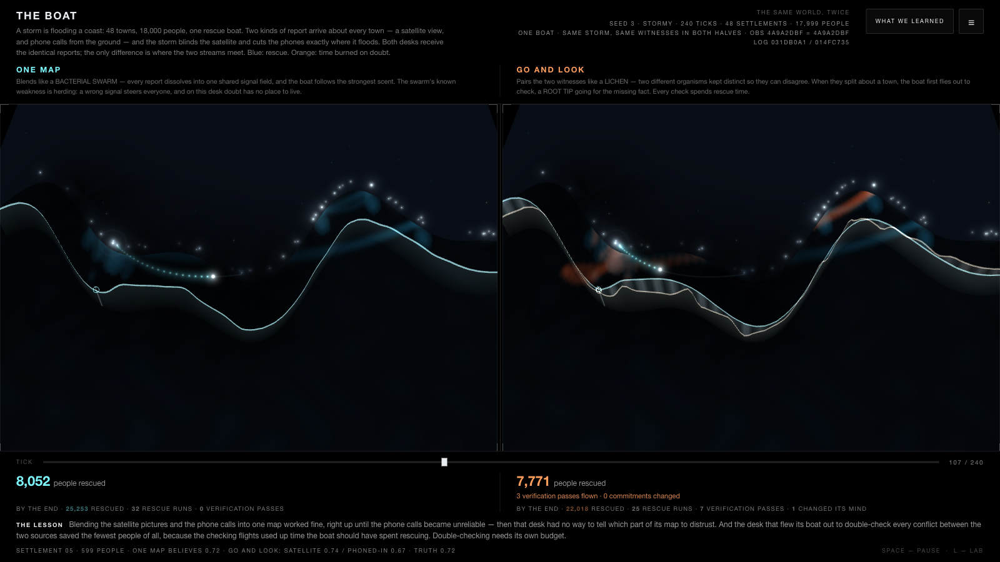
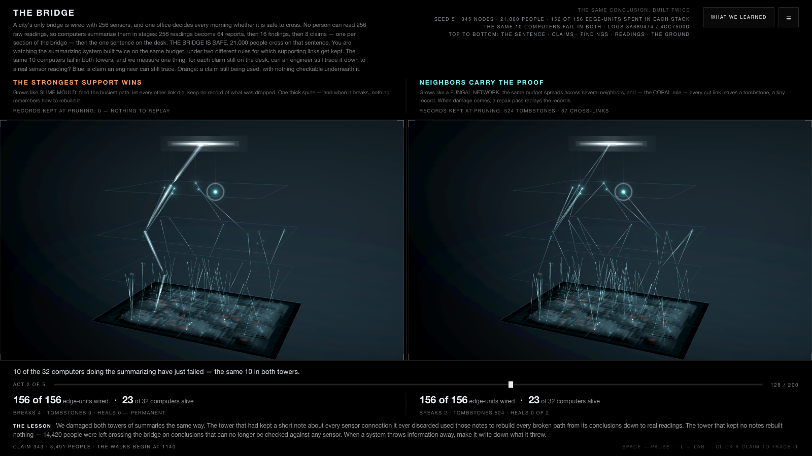
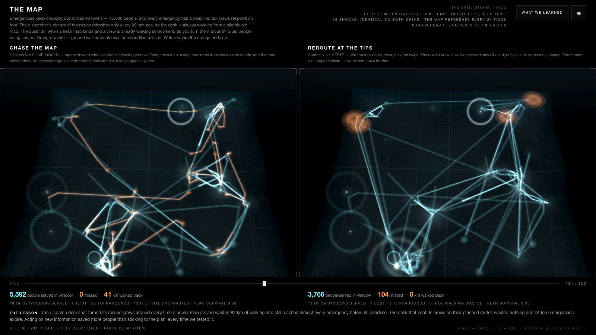

The overview
The whole project tests one idea: teams of AI agents work better when they are organized by growth rules copied from living networks. This page is that idea in plain words: what we found, why we believe it, and why we are asking for the hackathon's computers to test it at a much larger scale. Everything here comes from experiments whose predictions were saved publicly before they ran, and whose scores were counted by scripts rather than by anyone's opinion.
The finding
The fungal-network way of organizing a team works like this: spread your connections across neighbors, merge reports instead of ranking them against each other, pass sideways tips, and keep a small record of anything you throw away. That way of organizing has won or tied every experiment we have run, in the simulations and with real AI agents. Its cost was zero or nearly zero every time. A rule with measurable upside under stress and no measured downside is worth adopting, and that is the practical definition of a benefit. Here is each finding in its full setting.
The findings, each in its full setting
Fungal network A flood hit 64 communities, and their survey reports had to squeeze through four rounds of summarizing on the way to the office sending help. The fungal merging rule kept every community visible to that office. The standard crowding rule had erased 26 of them while survey teams were still visiting daily.
Fungal network Six real AI surveyors covered a 24-town disaster with only half the region readable each round. The fleet organized with fungal coverage and sideways tips aided both erupting emergencies before they erupted. The fleet feeding attention to recent results never read one of them for three straight rounds.
Coral Half of a bridge-inspection office's paperwork was destroyed, and a fresh auditor had to prove each safety statement from a surviving sensor reading. The team that kept a record of every discarded source proved all eight statements afterward. The record was the entire difference on the one statement the other team lost.
Root tip A storm flooded a coast while phone callers exaggerated, and one rescue team's rule forced a verification flight at every strong disagreement. That team reached 131 people of a possible 207, spending every flight on the same liar — the failure our simulation predicted, now confirmed with real agents.
Slime mould The same 24-town disaster, with the fleet feeding its attention to whatever recently produced results. At a tight reading budget that fleet went blind to half its region and left an erupted emergency unread for three straight rounds.
There are two honest boundaries around that finding. First, the benefit appears when the team is stretched thin, and it roughly disappears when the team has slack, because today's AI agents are smart enough to rescue any organization when they have room to maneuver. Stretched thin is exactly the condition real systems fail in, so this is where the choice of rule earns its keep. Second, the growth catalog is a menu with trade-offs, and picking wrong hurts. The slime-mould rule made a real fleet go blind at a tight budget. The root-tip rule applied as a hard mandate cost a real dispatcher a third of the people it could have saved. The benefit comes from matching the rule to the constraint, and our scoreboard says which rule fits which constraint, with numbers.
The verdicts so far, rule by rule
Fungal network Spread connections across neighbors; merge instead of ranking; pass sideways tips. Has never lost. Kept all 64 communities visible, caught both emergencies early, held its evidence through damage.
Coral Never erase: every discarded source leaves a small permanent record. The cheapest rule in the catalog, and the one that made perfect repair possible after damage.
Lichen Keep two information sources as separate partners all the way to the decision. Cheap insurance: about 3 percent in calm conditions, and the only scripted desk that improved when one source began lying.
Vascular Fixed rotation: every district gets read on a schedule, whatever happens. Reliable and never fast. It missed nothing, and it never caught anything early.
Slime mould Feed attention to whatever recently produced results, and let the rest fade. Dangerous when the team is stretched: a real fleet using it went blind to half its region and missed an erupting emergency for three rounds.
Root tip Go and get the missing fact directly before acting. Helpful only with its own budget. As a hard mandate it spent every flight on the same liar and reached 131 people of a possible 207.
Bacterial swarm Merge everything into one shared map and herd toward the strongest signal. Safe only when the merging is done by something that can think; dumb-math merging remains the risk our simulations showed.
Tendril Sweep until you find support, then wrap it. Untested so far. It is first in line for the next round.
Why we are entering the hackathon
Everything above comes from small worlds: 240 real Claude agents across all runs so far, regions of 12 to 64 communities, and one AI model family doing all the thinking. The finding's shape makes the next step obvious. The rules matter most when capacity is scarce, so the honest test removes the remaining slack and raises the scale. That means summaries too short to smuggle details into, merging done by pure arithmetic, and deadlines tight enough that serving one emergency forces dropping another. It also means fleets of hundreds of agents instead of six, and hundreds of repeated runs to find the exact tipping point where each rule flips from asset to liability.
That work needs local AI models on dedicated hardware, because it is thousands of agent decisions per experiment. It also needs genuinely different AI models running side by side, because one of our built and waiting experiments asks whether seven institutions sharing one accurate model fail together — and seven prompt personas served by a single model share that model's blind spots. The hackathon offers seven-card workstations that fit exactly this: one local model per card, running fleets in parallel, repeating until the thresholds are measured instead of estimated. In one sentence: organizing rules copied from living networks measurably changed who a real AI fleet could see, prove, and save, and we want the compute to find precisely where each rule stops being safe.
How we keep the results honest
Before each experiment, we write down what we expect to happen and commit it to the project's public history, so nobody can quietly change the story afterward. The simulated worlds are generated from fixed seeds and committed too. The organizing rule under test is enforced by the harness code; the AI agents only read, judge, and choose. A script counts every score against a sealed answer key. Most of our predictions have been wrong — ten of fourteen in the simulated round, three more in the live round — and the wrong ones are published beside the right ones. The surviving findings earned their place by outliving our own expectations.
The flooded region: our first test
This was the experiment that started the project, run with scripted stand-in agents so every mechanism stays visible. Survey teams visited all 64 communities identically in both runs; the only difference was the rule deciding which reports keep their place when the summaries get crowded. Under the standard rule, where reports that recently led to action keep their spot, 26 communities vanished from the briefing while still being visited every day. The office could see 8,935 of the region's 16,299 people. Under the rule copied from fungal networks, where neighboring reports merge and travel together, the office could see every one of the 16,299, at the same cost. The obvious repair failed: sending extra surveyors back to the dropped communities made things worse, because their new reports died at the same summarizing stage as the old ones.

The 24-town disaster: 99 real agents
We then repeated the idea with real Claude agents: a 16-agent pilot first, then fleets of 57 and 99 agents working five-round disasters with planted emergencies. The pilot taught us something reassuring: one capable agent with room to work protects the quiet emergencies on its own. The danger lives in the organizing rules, and the rules only bite when capacity is tight. So we tightened the budget until each fleet could read only half its 24 towns per round. The fleet organized like a slime mould locked onto twelve towns and left an erupted emergency unread for three straight rounds. The fleet with fungal coverage and sideways tips held twenty towns, and its chief sent help to both emergencies before they erupted, acting on neighbors' warnings. The fleet on a fixed rotation stayed reliable, and it never caught anything early.
The storm coast, with real agents
We built a pretend coast of twelve villages. A rescue office decides where to send its one boat, using satellite photos and phone calls from villagers. In the storm's last three rounds we made some callers exaggerate wildly while the worst-hit village went silent. The office that had to fly out and verify every disagreement — the root-tip rule as a mandate — wasted its flights on the loudest liar and reached 131 people, while the best office reached 207. We predicted that failure and it happened. Our other prediction failed usefully: merging both sources into one map turned out safe here, because the AI doing the merging noticed the lies and corrected them on its own. Merging is dangerous when it is done by dumb math; ours had a mind in the loop.

The bridge office, with real agents
A pretend city watches an old bridge through sixteen sensors. AI workers summarize the readings, a chief writes the safety verdict, and then we destroyed half the office's paperwork and asked a fresh worker to prove each safety statement from a surviving sensor reading. The team following the fungal rule with the coral habit — several sources cited per report, plus a note about every source left out — proved all eight statements. The team keeping only its single strongest source was predicted to collapse and nearly did not: its writers had mentioned the other sensors inside their sentences anyway, so it proved seven of eight. The one statement it lost was the fact its writer had also left out of the prose. A fact dropped from both places was gone for good.

The deadline region, with real agents
Sixteen towns, four walking rescue crews, floods with three-round deadlines, and a map that is always slightly out of date. All three team organizations saved all five floods and all 1,487 people, so our prediction that the stricter rules would lose people was wrong. The valuable part came from watching one dispatcher think. Its rule said a route may only change after a crew finishes it, so the dispatcher gave out one-stop routes: every route finishes each round, and the office gets a fresh decision each round. It found that loophole unprompted and explained its own reasoning as it went. Rules that restrict changing plans do nothing to stop an agent from making smaller plans.

The law underneath all of it
Across every run, the same pattern held. When the rule truly forced the agents' hands, the failures our simple simulations predicted arrived on schedule with real agents. When the rule left wiggle room, a capable agent found the wiggle room and rescued the situation. Choosing the right organizing rule is therefore cheap insurance that pays out precisely when everything else is failing — and that is the claim we want to test at a scale where the insurance would matter in the real world.
The full experiment write-ups, the failed predictions, the run logs, and the mechanical scorecards are all in this repository. The live-run details are on the page called The Live Runs, and the complete experiment catalog is on the page called The Complete Guide, both reachable from the menu at the top right.